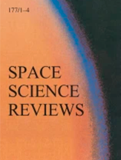
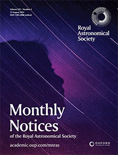

LATEST PUBLICATION

Mars’ Water Cycle and Escape: A View from Mars Express and Beyond
Montmessin et al. (2024)
Space Science Reviews
FEATURED PUBLICATION

Upper limits of HO2 in the atmosphere of Mars from the ExoMars Trace Gas Orbiter
Alday et al. (2024)
Monthly Notices of the Royal Astronomical Society
SEE ALL PUBLICATIONS
Slide 3
Descripción del tercer slide